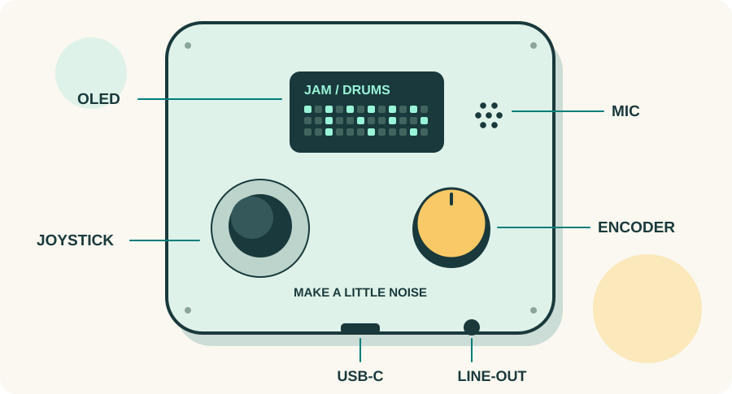
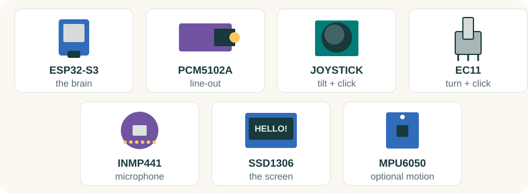
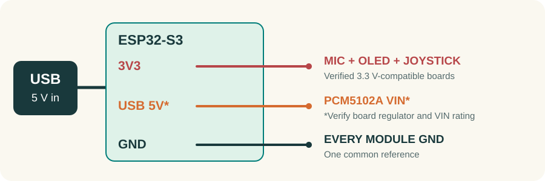
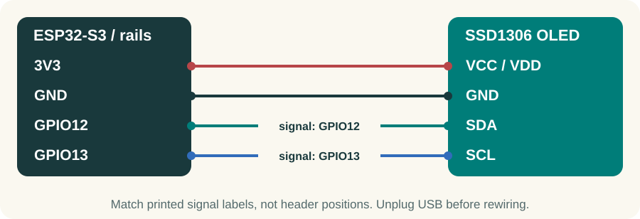
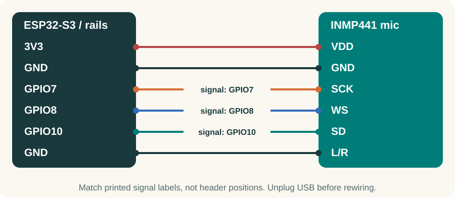
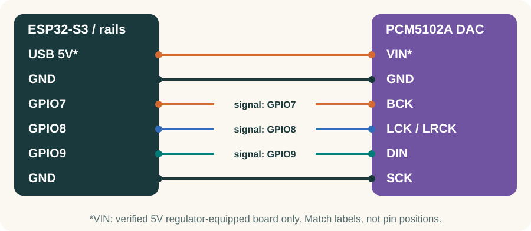
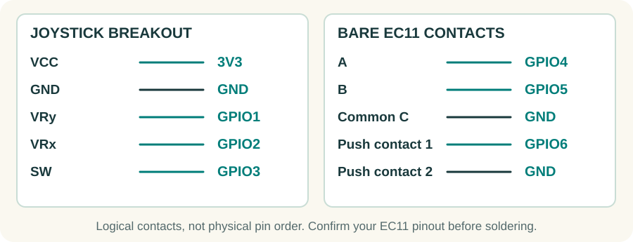
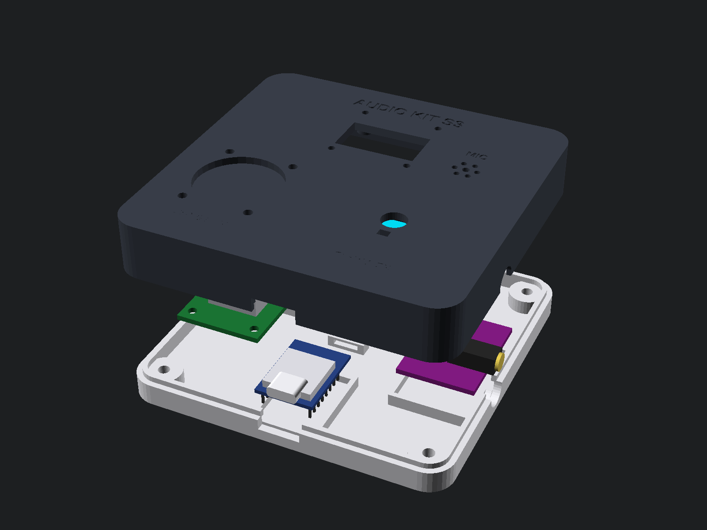
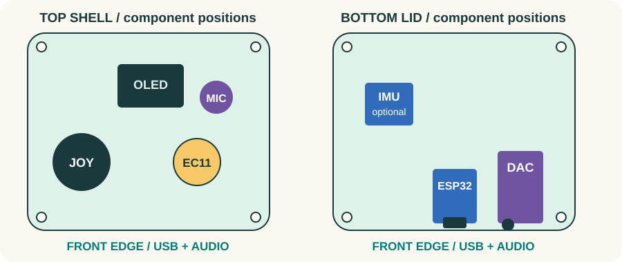
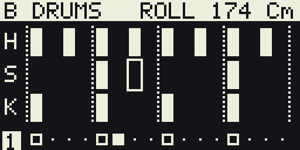

LET'S BUILD A MUSIC MACHINE
Make a little noise.
A microphone, a tiny screen, two playful controls, and a whole lot of sound. Build your kit one small win at a time.

This is a guide to the current wired prototype. The socketed carrier PCB is not finished. Some parts need soldered headers or prepared leads, and the printed case must be checked against your exact boards.
Follow the numbered missions, tick the checkpoints, and keep the case open until the electronics pass. First electronics build? Invite an experienced maker for the soldering and power checks.
Inside: a parts field guide, labeled wiring diagrams, firmware steps, case assembly, a first-beat challenge, and a rescue page. All wiring illustrations use signal names, not physical pin positions.
00 / CHOOSE YOUR ADVENTURE
Small steps. Happy beeps.
Work on a clear, nonconductive table. Give yourself an unhurried afternoon for the electronics, plus printing and software setup time.
| Mission | Your small win | Page |
|---|---|---|
| Prepare | Identify every module and power pin | 3-4 |
| Wake up the brain | Flash the hardware-test app | 5 |
| Add the senses | Screen on; mic responding | 6-7 |
| Make sound | Wire the DAC and controls; pass the bench test | 8-10 |
| Give it a home | Dry-fit, mount, route, close | 11-12 |
| Play | Make a beat in JAM | 13 |
Put these within reach
- A computer, USB-C data cable, and powered speaker with AUX/line input (or an audio interface / headphone amplifier). A charge-only cable cannot flash the board.
- Short jumper wires with ends that fit your headers; a breadboard or insulated distribution board for shared connections. Check whether breadboard power rails are split.
- A multimeter, small screwdrivers, tape labels, wire cutters, and a ruler or calipers. Use insulated wire and strain relief for the final harness.
- For unfinished headers, DAC straps, or the bare EC11: a soldering iron, stand, solder, ventilation, and heat-shrink. Get hands-on help if these are new to you.
Solderless means the connections are already prepared: headers fitted, DAC straps set, and the encoder on an adapter or harness. Loose pins pushed through bare holes are not reliable electrical joints.
01 / MEET THE BAND
Seven little teammates.
Match the printed labels and the exact board version. Color and shape are clues, never proof of a pinout.

| Qty | Part | Check before wiring |
|---|---|---|
| 1 | ESP32-S3 SuperMini | ESP32-S3FH4R2; 4 MB flash, 2 MB PSRAM; USB-C |
| 1 | PCM5102A DAC | Purple jack board; verify VIN rating and all four straps |
| 1 | KY-023-style joystick | Board with fitted pins and cap; VRx, VRy, SW |
| 1 | Bare EC11 encoder | Push switch, matching nut/washer/knob; prepared leads |
| 1 | INMP441 microphone | Round six-pin board; confirm actual chip and pin labels |
| 1 | SSD1306 OLED | 0.96-inch, 128 x 64, four-pin I2C version |
| 1 | MPU6050 / GY-521 | Motion sensor; optional for first sound and JAM |
Also gather wiring, the USB data cable, and a line-out cable. Case hardware is listed on page 11. The MAX98357A speaker amp and VL53L0X distance sensor are optional extras (page 14), not part of this seven-part list.
02 / POWER WITHOUT SURPRISES
Two rails. One ground.
A rail is a shared power connection. GND is the common reference. GPIO numbers identify signals on the ESP32, not the position of a header pin.

- Use USB-only power for this build. Identify the SuperMini's labeled 3V3, GND, and USB 5V/VBUS pins from the exact board documentation. Do not count header positions from a generic photo.
- Use 3.3 V for the INMP441, joystick, and a verified 3.3 V-compatible OLED. Sensor add-ons must also keep SDA/SCL and all GPIO signals at 3.3 V.
- The documented purple DAC board uses 5 V at VIN through its onboard regulator. Confirm this for your revision before connecting it. Never put 5 V on a bare PCM5102A chip, a 3V3 pin, or an ESP32 GPIO.
- Join every module GND to ESP32 GND. Make shared connections with proper rails or a soldered distribution point; do not cram several wires into one jumper socket.
Leave batteries and charging boards out of this build: the project has no completed battery power-path design. Add only one module per mission, with USB disconnected between changes.
03 / WAKE UP THE BRAIN
Teach it the test tune.
Start with only the ESP32 connected to USB. The hardware-test app lets you add modules gradually and see what is working.
Install ESP-IDF v5.5 with ESP32-S3 support using Espressif's Getting Started guide (linked on page 16). ESP-IDF builds and transfers the program. The commands below are for a Linux/macOS shell; on Windows use the ESP-IDF terminal and the menuconfig route below.
# Skip cloning if you already have this repository.
git clone https://github.com/willbearfruits/esp32-s3-supermini-kit.git
cd esp32-s3-supermini-kit
. ~/esp/esp-idf/export.sh # change to your IDF install path
cd firmware
idf.py set-target esp32s3
idf.py menuconfigIn menuconfig, open Kit firmware > Application and select the hardware-test application (CONFIG_KIT_APP_TEST). Save and exit. Run set-target on a fresh setup only; it may reset an existing local configuration.
idf.py build
idf.py flash monitorThe build needs internet access the first time to fetch components. If more than one board is connected, use idf.py -p YOUR_PORT flash monitor, replacing YOUR_PORT with the detected serial port. Exit the monitor with Ctrl+].
Board missing? Try another data cable and USB port. To enter download mode, hold BOOT, tap RESET, then release BOOT and flash again. If your board lacks RESET, hold BOOT while reconnecting USB, then release it. On Linux, follow Espressif's serial-port permissions instructions if access is denied.
04 / GIVE IT A FACE
Hello, tiny screen.
Disconnect USB. Read the four OLED labels carefully; their order varies between modules.

| OLED label | Connect to |
|---|---|
| VCC / VDD | ESP32 3V3, for a verified 3.3 V-compatible module |
| GND | ESP32 GND |
| SDA | GPIO12 |
| SCL | GPIO13 |
Reconnect USB. The serial scan should report 0x3C and the screen should show the test display. The hardware-test app also retries at 0x3D; the main startup path and JAM expect 0x3C. Use a module configured for 0x3C for the finished build.
I2C is a shared two-wire conversation: SDA carries data and SCL keeps time. Later sensors can share these same two signals. The audio wires on the next pages use a different bus called I2S.
05 / GIVE IT EARS
Say hello. Watch it listen.
Disconnect USB, then add the INMP441. Keep its small sound opening clear of tape, glue, and fingers.

| INMP441 label | Connect to |
|---|---|
| VDD | 3V3 |
| GND | GND |
| SCK | GPIO7 |
| WS | GPIO8 |
| SD | GPIO10 |
| L/R | GND for this guide; do not leave floating |
Reconnect USB. Wait for the four-second test-tone interval to finish, then speak or hum near the microphone. The level bar and waveform should respond. The serial diagnosis should settle on mic data OK.
I2S sends sound as numbers. GPIO7 and GPIO8 provide shared timing; the microphone sends its numbers back on GPIO10. The DAC will receive outgoing numbers on a separate wire, GPIO9.
06 / LET THE SOUND OUT
Meet the purple sound card.
Disconnect USB. The PCM5102A turns digital audio into a stereo line signal for an amplified listening device.

| DAC label | Connect to |
|---|---|
| VIN | Verified USB 5V rail, only for the regulator-equipped board |
| GND | GND |
| BCK | GPIO7 (shared with mic SCK) |
| LCK / LRCK | GPIO8 (shared with mic WS) |
| DIN | GPIO9 |
| SCK | GND; check whether the board already ties it low |
Check the back-of-board configuration. For the documented purple revision: H1L / FLT = L, H2L / DEMP = L, H3L / XSMT = H, H4L / FMT = L. Confirm each pad's function on your revision; bridge only the selected side, never H to L. Use a prepared board or get soldering help.
Start the listening device at low volume. Connect its line/AUX input, then power the kit. Listen for the four-second 440 Hz tone. After it ends, try a gentle hum; keep the speaker away from the mic to avoid feedback.
07 / ADD THE PLAYFUL BITS
Twist. Tilt. Click.
Disconnect USB. The joystick uses a breakout board; the bare EC11 needs an identified pinout and a soldered adapter or insulated harness.

| Control contact | Connect to |
|---|---|
| Joystick VCC / +5V marking | 3V3 for this analog KY-023-style module; never 5 V here |
| Joystick GND / VRy / VRx / SW | GND / GPIO1 / GPIO2 / GPIO3, respectively |
| EC11 A / B / common C | GPIO4 / GPIO5 / GND, respectively |
| EC11 push switch, two contacts | One to GPIO6; the other to GND |
Identify encoder A/B/common and the separate push switch from its drawing or an unplugged continuity test. Do not infer the pin order from this illustration. For an encoder breakout instead, map CLK, DT and SW to GPIO4, GPIO5 and GPIO6; power any onboard pull-ups from 3V3.
Power up without touching the joystick so startup centering can work. Turning the encoder brings up the ENCODER test screen and changes its count. A tap changes effect; a half-second hold changes preset. If turning is reversed, unplug and exchange A/B.
08 / THE OPEN-CASE SOUND CHECK
Earn your first-sound badge.
Keep everything on the bench. A working open build is much easier to assemble and troubleshoot than a mystery inside a closed box.
| Try this | You should get |
|---|---|
| Restart the test app | A stable boot, then about 4 seconds of 440 Hz tone |
| Speak gently after the tone | A moving level meter and audible mic signal |
| Watch the serial diagnosis | mic data OK, or mic OK, RIGHT slot |
| Turn the encoder | ENCODER page; count changes consistently |
| Tap, then briefly hold the encoder | Effect changes; then preset changes |
| Leave the kit running for a few minutes | No repeated boot counter increments, dropouts or excess heat |
Label future-you's wires
- Label both ends with the signal name or GPIO number. Color is a helpful extra: use red for 3V3, orange for 5V, and black for GND if you have them.
- Replace flaky temporary connections with fitted headers and insulated, strain-relieved wiring. Keep audio wires short and away from loose metal hardware.
- Photograph your working wiring before moving it into the shell. Leave enough slack to open the case without pulling a connector off.
- If you hear a squeal, lower the external volume and move the speaker away from the mic. This is acoustic feedback, not a challenge to sing louder.
09 / MAKE ITS LITTLE HOME
Print. Measure. Dry-fit.
The current shell is 100 x 98 x 24 mm. Its cradles model specific module sizes; a board with the same chip can still have a different outline.

Use enclosure/out/shell.stl and lid.stl, or the combined print_bed.stl. The exports are already print-oriented: shell top face down, lid bottom face down. Inspect the sliced layers and small bosses before printing.
The design targets a 0.8 mm nozzle, 2.4 mm walls, and 0.32-0.40 mm layers. Start with 3 walls and enough solid layers for 2.4 mm thickness (6 at 0.40 mm or 8 at 0.32 mm), plus 20-30% infill. The CAD intends support-free printing; confirm in your slicer.
| Case hardware | Quantity / starting specification |
|---|---|
| Heat-set inserts + lid screws | 4 M3 inserts (OD about 4.6 mm, length 4-5.7 mm); 4 M3 x 10 mm screws |
| OLED / joystick screws | 4 M2 x 4 mm / 4 M2 x 6 mm; verify actual engagement |
| Encoder hardware | Matching M7 nut/washer and 6 mm shaft knob |
| Mic gasket + wire restraint | One foam/silicone ring; small ties or insulated restraint |
10 / EVERY PART GETS A PLACE
Build the shell sandwich.
USB stays unplugged. Use the drawing as a placement key, then follow the actual mounting features in your printed parts.

- Top shell: fasten the OLED behind its window with four M2 screws. Use light pressure; do not load or pinch the glass.
- Seat the round mic beside the OLED with its real acoustic port aligned to the grille. Place the gasket around the port; do not cover the opening or force the PCB into the collar.
- Fit the EC11 through its panel opening, secure the matching washer/nut, and add the knob. Keep enough clearance for the push action. Mount the joystick on its four bosses and check full travel.
- Lid: seat the ESP32 with USB-C at the front edge. Seat the DAC on the right with its jack facing that same front edge, beside USB. Secure the optional IMU in its own cradle if fitted.
- Reconnect the labeled harness. Insulate exposed joints, restrain wires, and keep the seam, screw bosses, antenna area and mic port clear. Check connector and pin clearance with the halves gently together.
- With the case still open on a nonconductive surface, repeat the page 10 sound check. Unplug, align the lip, and close with four lid screws, lightly and evenly. If it resists, reopen and find the obstruction.
11 / MAKE YOUR FIRST BEAT
Your tiny band is ready.
Switch to JAM when the hardware checks pass. It is the case-friendly sequencer: six channels, a sampler, and a grid of musical possibilities.

Exit the serial monitor with Ctrl+]. In your activated ESP-IDF shell, from the repository root, run the following. The first setup on page 5 must have created firmware/sdkconfig. On Windows, select JAM in menuconfig, then build and flash instead.
tools/app.sh jam
cd firmware
idf.py flash monitor| Gesture in JAM | What happens |
|---|---|
| Turn encoder / flick joystick | Move the pattern cursor |
| Tap encoder | Toggle the selected grid cell |
| Hold encoder about 0.5 seconds | Next page: PATTERN, MIX, SONG, SETUP |
| Push encoder and turn | Change channel |
| Click joystick | Enter/cycle perform mode; behavior depends on channel |
| Hold encoder 3 seconds | Clear the current channel - use deliberately |
Verify the joystick moves the cursor and its click changes perform mode. JAM autosaves about two seconds after the last edit; wait a few extra seconds before unplugging. Try a sample next: select MIC and tap to record up to two seconds, then select SAMPLE. Live mic is audible only while MIC is selected.
BONUS / OPTIONAL SIDE QUESTS
Add extras after the win.
These are independent extensions. The seven-part case has an IMU cradle; it has no designed mounting for the speaker, amplifier, or distance sensor.
Motion and distance for the looper
| Module | Connections / expected I2C address |
|---|---|
| MPU6050 / GY-521 | 3.3 V-compatible VCC; GND; SDA -> GPIO12; SCL -> GPIO13. AD0 low for 0x68; verify board default. |
| VL53L0X breakout | Verified 3.3 V-compatible supply and I2C; GND; SDA -> GPIO12; SCL -> GPIO13. Address 0x29. Leave XSHUT/INT at the module's documented defaults. |
These share the OLED's I2C wires. Check breakout supply requirements and pull-ups before connecting; pull-ups must go to 3V3. If none of the boards provide them, add one 4.7 kOhm pull-up from SDA to 3V3 and one from SCL to 3V3. Do not add a new pair blindly to every board.
Use tools/app.sh looper, then flash, to try motion and distance expression. The driver implements VL53L0X, not VL53L1X. An I2C scan finds presence; testing tilt/distance in the looper verifies actual behavior.
MAX98357A speaker branch: bench extension
| Amplifier pin | Connection |
|---|---|
| BCLK / LRC / DIN | GPIO7 / GPIO8 / GPIO9 (shared with the DAC) |
| SD / GND / GAIN | GPIO11 / common GND / floating, if supported by your board |
| VIN | Verified regulated supply with enough current for the speaker load |
| Speaker + and - | A suitable 4 or 8 ohm speaker across the two outputs |
Current firmware enables the amp while the GPIO6 encoder switch is held, unless Kit firmware > Keep the speaker amp on all the time is enabled. BOOT's software button alias does not enable this hardware gate. The PCM5102A line-out is independent of that gate. Speaker power distribution and mounting need separate validation before boxing this extension.
RESCUE / EVERY BUILD HAS A PLOT TWIST
One clue at a time.
Unplug before touching wiring. Return to the hardware-test app for diagnosis; reconnect one stage at a time.
| What you see or hear | Try this first |
|---|---|
| No serial device / flashing fails | Try a known data cable and direct USB port; close other serial monitors. Enter BOOT download mode (page 5). Check port permissions. |
| Screen dark; firmware running | Check OLED VCC/GND, then GPIO12 SDA and GPIO13 SCL. Look for 0x3C. Test app can retry 0x3D; JAM expects 0x3C. |
| Tone missing; screen works | Check external AUX/line input and volume. Unplug; check DAC VIN, BCK=7, LCK=8, DIN=9, SCK=GND and XSMT=H. |
| Tone works; mic silent | Check INMP441 VDD=3V3, SD=10, SCK=7, WS=8 and L/R tied low. Read the test diagnosis; inspect for a blocked mic port. |
| RIGHT slot message | Mic L/R is high. Supported by the firmware; not a fault if the level meter responds. |
| Intermittent / line stuck | Inspect fitted headers, shared grounds and loose jumpers. Reconnect with power off. Keep signal wiring short. |
| Repeated boots / BROWNOUT | Disconnect USB immediately if anything gets hot. Remove the newest module; check shorts, polarity, cable and power budget. Retry the known-good stage. |
| Encoder reversed / skips | Verify common=GND and A/B=4/5. Exchange A/B if reversed. For multiple steps per detent, check Kit firmware > Encoder counts per detent. |
| Joystick odd / no click | Reboot with stick centered. Check VRy=1, VRx=2, SW=3 and 3V3 power. Firmware rotation is intentional for the case. |
| Squeal / distortion | Lower listening volume; move speaker away from mic. Check input mode and mic gain. Do not use the DAC to drive passive speakers or headphones directly. |
| Line-out works; optional speaker silent | Check amp supply and SD=11. It is normally enabled only while GPIO6 is held; see page 14. |
| Works open, fails closed | Unplug and reopen. Look for a pinched wire, a loose connector, screw contact, blocked mic port, or knob pressed against the panel. |
WORKBENCH CARD / KEEP THIS PAGE HANDY
Your pocket pin map.
Signal labels, not physical pin order. Unplug before changing connections. Firmware source of truth: firmware/main/pins.h.
| ESP32 | Destination |
|---|---|
| GPIO1 / GPIO2 / GPIO3 | Joystick VRy / VRx / SW |
| GPIO4 / GPIO5 / GPIO6 | Encoder A / B / push switch; common and other switch contact -> GND |
| GPIO7 | Mic SCK + DAC BCK (+ optional amp BCLK) |
| GPIO8 | Mic WS + DAC LCK (+ optional amp LRC) |
| GPIO9 | DAC DIN (+ optional amp DIN) |
| GPIO10 | Mic SD |
| GPIO11 | Optional amp SD |
| GPIO12 / GPIO13 | OLED + optional sensors SDA / SCL |
| 3V3 / GND | Verified 3.3 V modules / all module grounds |
| Verified USB 5V rail | VIN of verified regulator-equipped purple DAC only |
A few words decoded
GPIO: a programmable signal pin. DAC: digital sound to analog audio. I2S: digital audio bus. I2C: two-wire display/sensor bus. VIN/VCC/VDD: power labels whose voltage depends on the board. Continuity: a meter check for an electrical connection. Dry-fit: assemble without power or permanent fastening.
Sources and build notes
Prepared from repository revision d52a80d: firmware/main/pins.h, main.c, app_test.c, audio.c, input.c and Kconfig.projbuild; README.md; parts/minimal-kit.md; enclosure/enclosure.scad and enclosure/README.md. This guide documents the prototype; no physical assembly or electrical test was performed for this edition.
- Project and firmware
- Espressif: install ESP-IDF v5.5 for ESP32-S3
- TI: PCM5102A line-output specification
- Adafruit: MAX98357A breakout pinouts (match your board)
Illustrations are editable SVGs with PNG companions. Case and JAM images come from this repository. Rebuild instructions and the browser checklist are beside the guide in docs/assembly/. Documentation and new artwork: MIT, as in the repository license.